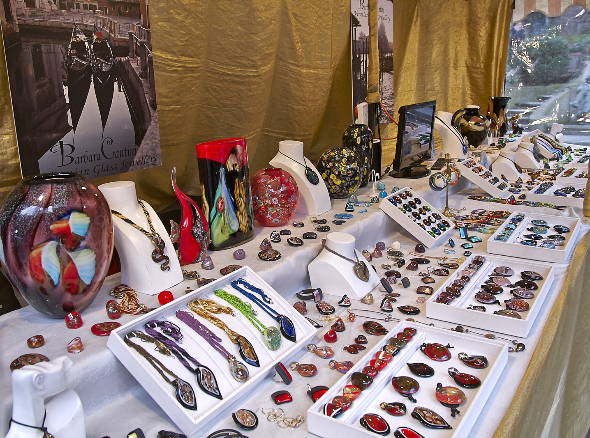

Art in Venice
In Venice, art is important as much as preparing and eating food. In the city people can go to museums of modern and contemporary art: Ca'Pesaro, Palazzo Grassi Peggy Guggenheim Collection and Punta della Dogana. All museums are either modern and contemporary art or they are in category of historic houses. The most famous glass in Venice is Venetian Glass, it is made in Venice but is primarily from island Murano. Venetian glass is made in a traditional way, which is very complex. The glass is made of silica which becomes liquid when temperature is high. After glass turns from a liquid state into a sold, glass becomes soft and professional maker of the Venetian glass can make different shapes out of glass. The Venetian glass consists of materials like ceramic fluxes, sodium oxide, sodium, nitrate and arsenic and coloring substances. Murano artists use these tools in the period of making a glass: borselle(in eng. tongs), canna da soffio(blowing pipe), pontello(iron), scagno(bench) and tagianti(clippers for cutting).
